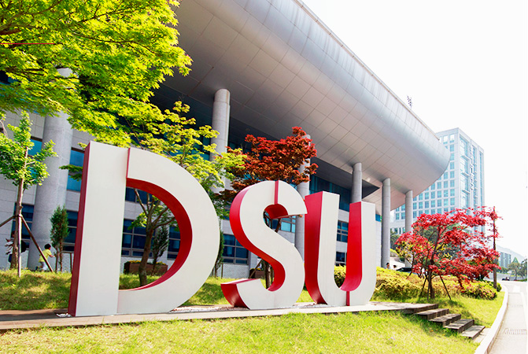

 본 대학교의 건학이념은 기독교 정신을 바탕으로 다양한 학문과 학교생활의 적절한 조화를 통해 학생들의 인격을 완성하고 하나님과 인류를 위하여 봉사할 수 있는 유능한 인재를 양성함에 있다.첫째 기독교 정신을 바탕으로 믿음, 소망, 사랑의 인격을 갖춘 참된 지도자를 양성한다.둘째 첨단 과학발전에 부응하고 산업사회의 주역이 될 세계적인 인재를 양성한다.셋째 합리적인 사고와 창조적인 지식을 연마하여 올바른 가치관을 가진 민주시민을 양성한다.
지역: 부산광역시 사상구 주례로 47
교화: 철쭉
상징 동물: 독수리
동서공과대학 설립일: 1991년 11월 15일